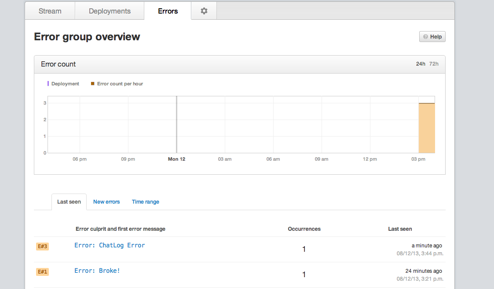

Opbeat is a simple and elegant deployment/error tracking solution for your webapps. We are using a backend NodeJS + Socket.IO app to handle data pushes to a client. Here we have tons of requests we are making to our own API and APIs from other frameworks we depend on, like SendGrid,HipChat,etc.
Opbeat has started off with tracking mostly for backend services, but I see the value for errors we can log for user facing web clients, especially for errors we can’t foresee during testing. An exception caught by an unforseen error could be pushed to opbeat and we can analyse this realtime, per deployment. A particularly useful case is while using OAuth with 3rd party services like Facebook or Twitter.
Opbeat has started out with building integrations with Flask,Django and Rails/Sinatra applications, and deployment tracking is done with connecting your rep to Github.
Now, instead of looking through our logs from our NodeJS app, I just depend on Opbeat. We use their experimental npm package

There are other services competing with Opbeat, like BugSnag and NodeTime, but we are excited about what Opbeat is growing to become!